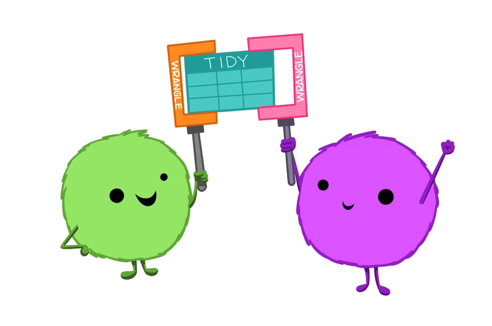

7 Data Wrangling
Note
Effective Data Science is still a work-in-progress. This chapter is largely complete and just needs final proof reading.
If you would like to contribute to the development of EDS, you may do so at https://github.com/zakvarty/data_science_notes.
7.1 What is Data Wrangling?

Okay, so you’ve got some data. That’s a great start!
You might have had it handed to you by a collaborator, requested it via an API or scraped it from the raw html of a webpage. In the worst case scenario, you’re an actual scientist (not just a data one) and you spent the last several months of your life painstakingly measuring flower petals or car parts. Now we really want to do something useful with that data.
We’ve seen already how you can load the data into R and pivot between wider and longer formats, but that probably isn’t enough to satisfy your curiosity. You want to be able to view your data, manipulate and subset it, create new variables from existing ones and cross-reference your dataset with others. All of these are things possible in R and are known under various collective names including data manipulation, data munging and data wrangling.
I’ve decided to use the term data wrangling here. That’s because data manipulation sounds boring as heck and data munging is both unpleasant to say and makes me imagine we are squelching through some sort of information swamp.
In what follows, I’ll give a fly-by tour of tools for data wrangling in R, showing some examples along the way. I’ll focus on some of the most common and useful operations and link out to some more extensive guides for wrangling your data in R, that you can refer back to as you need them.
7.2 Example Data Sets
To demonstrate some standard skills we will use two datasets. The mtcars data comes built into any R installation. The second data set we will look at is the penguins data from palmerpenguins.
library(palmerpenguins)
penguins <- palmerpenguins::penguins
cars <- datasets::mtcars7.3 Viewing Your Data
7.3.1 View()
The View() function can be used to create a spreadsheet-like view of your data. In RStudio this will open as a new tab.
View() will work for any “matrix-like” R object, such as a tibble, data frame, vector or matrix. Note the capital letter - the function is called View(), not view().

7.3.2 head()
For large data sets, you might not want (or be able to) view it all at once. You can then use head() to view the first few rows. The integer argument n specifies the number of rows you would like to return.
head(x = penguins, n = 3)
#> # A tibble: 3 × 8
#> species island bill_length_mm bill_depth_mm flipper_length_mm body_mass_g
#> <fct> <fct> <dbl> <dbl> <int> <int>
#> 1 Adelie Torgers… 39.1 18.7 181 3750
#> 2 Adelie Torgers… 39.5 17.4 186 3800
#> 3 Adelie Torgers… 40.3 18 195 3250
#> # ℹ 2 more variables: sex <fct>, year <int>
7.3.3 str()
An alternative way to view a data set that is large or has a complicated format is to examine its structure using str(). This is a useful way to inspect list-like objects with a nested structure.
str(penguins)
#> tibble [344 × 8] (S3: tbl_df/tbl/data.frame)
#> $ species : Factor w/ 3 levels "Adelie","Chinstrap",..: 1 1 1 1 1 1 1 1 1 1 ...
#> $ island : Factor w/ 3 levels "Biscoe","Dream",..: 3 3 3 3 3 3 3 3 3 3 ...
#> $ bill_length_mm : num [1:344] 39.1 39.5 40.3 NA 36.7 39.3 38.9 39.2 34.1 42 ...
#> $ bill_depth_mm : num [1:344] 18.7 17.4 18 NA 19.3 20.6 17.8 19.6 18.1 20.2 ...
#> $ flipper_length_mm: int [1:344] 181 186 195 NA 193 190 181 195 193 190 ...
#> $ body_mass_g : int [1:344] 3750 3800 3250 NA 3450 3650 3625 4675 3475 4250 ...
#> $ sex : Factor w/ 2 levels "female","male": 2 1 1 NA 1 2 1 2 NA NA ...
#> $ year : int [1:344] 2007 2007 2007 2007 2007 2007 2007 2007 2007 2007 ...
7.3.4 names()
If you just want to access the variable names you can do so with the names() function from base R.
names(penguins)
#> [1] "species" "island" "bill_length_mm"
#> [4] "bill_depth_mm" "flipper_length_mm" "body_mass_g"
#> [7] "sex" "year"Similarly, you can explicitly access the row and column names of a data frame or tibble using colnames() or rownames().
colnames(cars)
#> [1] "mpg" "cyl" "disp" "hp" "drat" "wt" "qsec" "vs" "am" "gear"
#> [11] "carb"rownames(cars)
#> [1] "Mazda RX4" "Mazda RX4 Wag" "Datsun 710"
#> [4] "Hornet 4 Drive" "Hornet Sportabout" "Valiant"
#> [7] "Duster 360" "Merc 240D" "Merc 230"
#> [10] "Merc 280" "Merc 280C" "Merc 450SE"
#> [13] "Merc 450SL" "Merc 450SLC" "Cadillac Fleetwood"
#> [16] "Lincoln Continental" "Chrysler Imperial" "Fiat 128"
#> [19] "Honda Civic" "Toyota Corolla" "Toyota Corona"
#> [22] "Dodge Challenger" "AMC Javelin" "Camaro Z28"
#> [25] "Pontiac Firebird" "Fiat X1-9" "Porsche 914-2"
#> [28] "Lotus Europa" "Ford Pantera L" "Ferrari Dino"
#> [31] "Maserati Bora" "Volvo 142E"In the cars data, the car model are stored as the row names. This doesn’t really jive with our idea of tidy data - we’ll see how to fix that shortly.
7.4 Renaming Variables
7.4.1 colnames()
The function colnames() can be used to set, as well as to retrieve, column names.
7.4.2 dplyr::rename()
We can also use functions from dplyr to rename columns. Let’s alter the second column name.
This could be done as part of a pipe if we were making many alterations.
When using the dplyr function rename(), you have to remember the format new_name = old_name. This matches the format used to create a data frame or tibble, but is the opposite order to the python function of the same name and often catches people out.
In the section on creating new variables, we will see an alternative way of doing this by copying the column and then deleting the original.
7.5 Subsetting
7.5.1 Base R
In base R you can extract rows, columns and combinations thereof using index notation.
# First row
penguins[1, ]
#> # A tibble: 1 × 8
#> species island bill_length_mm bill_depth_mm flipper_length_mm body_mass_g
#> <fct> <fct> <dbl> <dbl> <int> <int>
#> 1 Adelie Torgers… 39.1 18.7 181 3750
#> # ℹ 2 more variables: sex <fct>, year <int>
# First Column
penguins[ , 1]
#> # A tibble: 344 × 1
#> species
#> <fct>
#> 1 Adelie
#> 2 Adelie
#> 3 Adelie
#> 4 Adelie
#> 5 Adelie
#> 6 Adelie
#> # ℹ 338 more rows
# Rows 2-3 of columns 1, 2 and 4
penguins[2:3, c(1, 2, 4)]
#> # A tibble: 2 × 3
#> species island bill_depth_mm
#> <fct> <fct> <dbl>
#> 1 Adelie Torgersen 17.4
#> 2 Adelie Torgersen 18Using negative indexing you can remove rows or columns
# Drop all but first row
penguins[-(2:344), ]
#> # A tibble: 1 × 8
#> species island bill_length_mm bill_depth_mm flipper_length_mm body_mass_g
#> <fct> <fct> <dbl> <dbl> <int> <int>
#> 1 Adelie Torgers… 39.1 18.7 181 3750
#> # ℹ 2 more variables: sex <fct>, year <int># Drop all but first column
penguins[ , -(2:8)]
#> # A tibble: 344 × 1
#> species
#> <fct>
#> 1 Adelie
#> 2 Adelie
#> 3 Adelie
#> 4 Adelie
#> 5 Adelie
#> 6 Adelie
#> # ℹ 338 more rowsYou can also select rows or columns by their names. This can be done using the bracket syntax ([ ]) or the dollar syntax ($).
penguins[ ,"species"]
#> # A tibble: 344 × 1
#> species
#> <fct>
#> 1 Adelie
#> 2 Adelie
#> 3 Adelie
#> 4 Adelie
#> 5 Adelie
#> 6 Adelie
#> # ℹ 338 more rows
penguins$species
#> [1] Adelie Adelie Adelie Adelie Adelie Adelie Adelie
#> [8] Adelie Adelie Adelie Adelie Adelie Adelie Adelie
#> [15] Adelie Adelie Adelie Adelie Adelie Adelie Adelie
#> [22] Adelie Adelie Adelie Adelie Adelie Adelie Adelie
#> [29] Adelie Adelie Adelie Adelie Adelie Adelie Adelie
#> [36] Adelie Adelie Adelie Adelie Adelie Adelie Adelie
#> [43] Adelie Adelie Adelie Adelie Adelie Adelie Adelie
#> [50] Adelie Adelie Adelie Adelie Adelie Adelie Adelie
#> [57] Adelie Adelie Adelie Adelie Adelie Adelie Adelie
#> [64] Adelie Adelie Adelie Adelie Adelie Adelie Adelie
#> [71] Adelie Adelie Adelie Adelie Adelie Adelie Adelie
#> [78] Adelie Adelie Adelie Adelie Adelie Adelie Adelie
#> [85] Adelie Adelie Adelie Adelie Adelie Adelie Adelie
#> [92] Adelie Adelie Adelie Adelie Adelie Adelie Adelie
#> [99] Adelie Adelie Adelie Adelie Adelie Adelie Adelie
#> [106] Adelie Adelie Adelie Adelie Adelie Adelie Adelie
#> [113] Adelie Adelie Adelie Adelie Adelie Adelie Adelie
#> [120] Adelie Adelie Adelie Adelie Adelie Adelie Adelie
#> [127] Adelie Adelie Adelie Adelie Adelie Adelie Adelie
#> [134] Adelie Adelie Adelie Adelie Adelie Adelie Adelie
#> [141] Adelie Adelie Adelie Adelie Adelie Adelie Adelie
#> [148] Adelie Adelie Adelie Adelie Adelie Gentoo Gentoo
#> [155] Gentoo Gentoo Gentoo Gentoo Gentoo Gentoo Gentoo
#> [162] Gentoo Gentoo Gentoo Gentoo Gentoo Gentoo Gentoo
#> [169] Gentoo Gentoo Gentoo Gentoo Gentoo Gentoo Gentoo
#> [176] Gentoo Gentoo Gentoo Gentoo Gentoo Gentoo Gentoo
#> [183] Gentoo Gentoo Gentoo Gentoo Gentoo Gentoo Gentoo
#> [190] Gentoo Gentoo Gentoo Gentoo Gentoo Gentoo Gentoo
#> [197] Gentoo Gentoo Gentoo Gentoo Gentoo Gentoo Gentoo
#> [204] Gentoo Gentoo Gentoo Gentoo Gentoo Gentoo Gentoo
#> [211] Gentoo Gentoo Gentoo Gentoo Gentoo Gentoo Gentoo
#> [218] Gentoo Gentoo Gentoo Gentoo Gentoo Gentoo Gentoo
#> [225] Gentoo Gentoo Gentoo Gentoo Gentoo Gentoo Gentoo
#> [232] Gentoo Gentoo Gentoo Gentoo Gentoo Gentoo Gentoo
#> [239] Gentoo Gentoo Gentoo Gentoo Gentoo Gentoo Gentoo
#> [246] Gentoo Gentoo Gentoo Gentoo Gentoo Gentoo Gentoo
#> [253] Gentoo Gentoo Gentoo Gentoo Gentoo Gentoo Gentoo
#> [260] Gentoo Gentoo Gentoo Gentoo Gentoo Gentoo Gentoo
#> [267] Gentoo Gentoo Gentoo Gentoo Gentoo Gentoo Gentoo
#> [274] Gentoo Gentoo Gentoo Chinstrap Chinstrap Chinstrap Chinstrap
#> [281] Chinstrap Chinstrap Chinstrap Chinstrap Chinstrap Chinstrap Chinstrap
#> [288] Chinstrap Chinstrap Chinstrap Chinstrap Chinstrap Chinstrap Chinstrap
#> [295] Chinstrap Chinstrap Chinstrap Chinstrap Chinstrap Chinstrap Chinstrap
#> [302] Chinstrap Chinstrap Chinstrap Chinstrap Chinstrap Chinstrap Chinstrap
#> [309] Chinstrap Chinstrap Chinstrap Chinstrap Chinstrap Chinstrap Chinstrap
#> [316] Chinstrap Chinstrap Chinstrap Chinstrap Chinstrap Chinstrap Chinstrap
#> [323] Chinstrap Chinstrap Chinstrap Chinstrap Chinstrap Chinstrap Chinstrap
#> [330] Chinstrap Chinstrap Chinstrap Chinstrap Chinstrap Chinstrap Chinstrap
#> [337] Chinstrap Chinstrap Chinstrap Chinstrap Chinstrap Chinstrap Chinstrap
#> [344] Chinstrap
#> Levels: Adelie Chinstrap GentooSince penguins is a tibble, these return different types of object. Subsetting a tibble with bracket syntax will return a tibble but extracting a column using the dollar syntax returns a vector of values.
7.5.2 filter() and select()
dplyr has two functions for subsetting, filter() subsets by rows and select() subsets by column.
In both functions you list what you would like to retain. Filter and select calls can be piped together to subset based on row and column values.
penguins %>%
select(species, island, body_mass_g)
#> # A tibble: 344 × 3
#> species island body_mass_g
#> <fct> <fct> <int>
#> 1 Adelie Torgersen 3750
#> 2 Adelie Torgersen 3800
#> 3 Adelie Torgersen 3250
#> 4 Adelie Torgersen NA
#> 5 Adelie Torgersen 3450
#> 6 Adelie Torgersen 3650
#> # ℹ 338 more rowsSubsetting rows can be inverted by negating the filter() statement
penguins %>%
select(species, island, body_mass_g) %>%
filter(!(body_mass_g > 6000))
#> # A tibble: 340 × 3
#> species island body_mass_g
#> <fct> <fct> <int>
#> 1 Adelie Torgersen 3750
#> 2 Adelie Torgersen 3800
#> 3 Adelie Torgersen 3250
#> 4 Adelie Torgersen 3450
#> 5 Adelie Torgersen 3650
#> 6 Adelie Torgersen 3625
#> # ℹ 334 more rowsand dropping columns can done by selecting all columns except the one(s) you want to drop.
7.6 Creating New Variables
7.6.1 Base R
We can create new variables in base R by assigning a vector of the correct length to a new column name.
cars_renamed$weight <- cars_renamed$wtIf we then drop the original column from the data frame, this gives us an alternative way of renaming columns.
cars_renamed <- cars_renamed[ ,-which(names(cars_renamed) == "wt")]
head(cars_renamed, n = 5)
#> miles_per_gallon cylinders displacement horse_power
#> Mazda RX4 21.0 6 160 110
#> Mazda RX4 Wag 21.0 6 160 110
#> Datsun 710 22.8 4 108 93
#> Hornet 4 Drive 21.4 6 258 110
#> Hornet Sportabout 18.7 8 360 175
#> rear_axel_ratio qsec vs am gear carb weight
#> Mazda RX4 3.90 16.46 0 1 4 4 2.620
#> Mazda RX4 Wag 3.90 17.02 0 1 4 4 2.875
#> Datsun 710 3.85 18.61 1 1 4 1 2.320
#> Hornet 4 Drive 3.08 19.44 1 0 3 1 3.215
#> Hornet Sportabout 3.15 17.02 0 0 3 2 3.440One thing to be aware of is that this operation does not preserve column ordering.
Generally speaking, code that relies on columns being in a specific order is fragile - it breaks easily. If possible, you should try to write your code in another way that’s robust to column reordering. I’ve done that here when removing the wt column by looking up the column index as part of my code, rather than assuming it will always be the fourth column.
7.6.2 dplyr::mutate()
The function from dplyr to create new columns is mutate(). Let’s create another column that has the car’s weight in kilogrammes rather than tonnes.
cars_renamed <- cars_renamed %>%
mutate(weight_kg = weight * 1000)
cars_renamed %>%
select(miles_per_gallon, cylinders, displacement, weight, weight_kg) %>%
head(n = 5)
#> miles_per_gallon cylinders displacement weight weight_kg
#> Mazda RX4 21.0 6 160 2.620 2620
#> Mazda RX4 Wag 21.0 6 160 2.875 2875
#> Datsun 710 22.8 4 108 2.320 2320
#> Hornet 4 Drive 21.4 6 258 3.215 3215
#> Hornet Sportabout 18.7 8 360 3.440 3440You can also create new columns that are functions of multiple other columns.
7.6.3 rownames_to_column()
One useful example of adding an additional row to a data frame is to convert its row names to a column of the data fame.
There’s a neat function called rownames_to_column() in the tibble package. This will add the row names as the first column and remove the row names all in one step.
cars %>%
tibble::rownames_to_column(var = "model") %>%
head(n = 5)
#> model mpg cyl disp hp drat wt qsec vs am gear carb
#> 1 Mazda RX4 21.0 6 160 110 3.90 2.620 16.46 0 1 4 4
#> 2 Mazda RX4 Wag 21.0 6 160 110 3.90 2.875 17.02 0 1 4 4
#> 3 Datsun 710 22.8 4 108 93 3.85 2.320 18.61 1 1 4 1
#> 4 Hornet 4 Drive 21.4 6 258 110 3.08 3.215 19.44 1 0 3 1
#> 5 Hornet Sportabout 18.7 8 360 175 3.15 3.440 17.02 0 0 3 2
7.6.4 rowids_to_column()
Another function from tibble adds the row id of each observation as a new column. This is often useful when ordering or combining tables.
cars %>%
tibble::rowid_to_column(var = "row_id") %>%
head(n = 5)
#> row_id mpg cyl disp hp drat wt qsec vs am gear carb
#> 1 1 21.0 6 160 110 3.90 2.620 16.46 0 1 4 4
#> 2 2 21.0 6 160 110 3.90 2.875 17.02 0 1 4 4
#> 3 3 22.8 4 108 93 3.85 2.320 18.61 1 1 4 1
#> 4 4 21.4 6 258 110 3.08 3.215 19.44 1 0 3 1
#> 5 5 18.7 8 360 175 3.15 3.440 17.02 0 0 3 27.7 Summaries
The summarise() function allows you to collapse a data frame into a single row, which using a summary statistic of your choosing.
We can calculate the average bill length of all penguins in a single summarise() function call.
Since we have missing values, we might instead want to calculate the mean of the recorded values.
We can also use summarise() to gather multiple summaries in a single data frame.
bill_length_mm_summary <- penguins %>%
summarise(
mean = mean(bill_length_mm, na.rm = TRUE),
median = median(bill_length_mm, na.rm = TRUE),
min = max(bill_length_mm, na.rm = TRUE),
q_0 = min(bill_length_mm, na.rm = TRUE),
q_1 = quantile(bill_length_mm, prob = 0.25, na.rm = TRUE),
q_2 = median(bill_length_mm, na.rm = TRUE),
q_3 = quantile(bill_length_mm, prob = 0.75, na.rm = TRUE),
q_4 = max(bill_length_mm, na.rm = TRUE))
bill_length_mm_summary
#> # A tibble: 1 × 8
#> mean median min q_0 q_1 q_2 q_3 q_4
#> <dbl> <dbl> <dbl> <dbl> <dbl> <dbl> <dbl> <dbl>
#> 1 43.9 44.4 59.6 32.1 39.2 44.4 48.5 59.6In all, this isn’t overly exciting. You might rightly wonder why you’d want to use summarise() when we could just use the simpler base R calls directly.
One benefit of summarise() is that it provides certainty that the obejct returned will be of a certain class (a tibble) no matter what summary function is used. However, summarise() really comes into its own when you want to apply these summaries to distinct subgroups of the data.
7.8 Grouped Operations
The real benefit of summarise() comes from its combination with group_by(). This allows to you calculate the same summary statistics for each level of a factor with only one additional line of code.
Here we’re re-calculating the same set of summary statistics we just found for all penguins, but for each individual species.
penguins %>%
group_by(species) %>%
summarise(
mean = mean(bill_length_mm, na.rm = TRUE),
median = median(bill_length_mm, na.rm = TRUE),
min = max(bill_length_mm, na.rm = TRUE),
q_0 = min(bill_length_mm, na.rm = TRUE),
q_1 = quantile(bill_length_mm, prob = 0.25, na.rm = TRUE),
q_2 = median(bill_length_mm, na.rm = TRUE),
q_3 = quantile(bill_length_mm, prob = 0.25, na.rm = TRUE),
q_4 = max(bill_length_mm, na.rm = TRUE))
#> # A tibble: 3 × 9
#> species mean median min q_0 q_1 q_2 q_3 q_4
#> <fct> <dbl> <dbl> <dbl> <dbl> <dbl> <dbl> <dbl> <dbl>
#> 1 Adelie 38.8 38.8 46 32.1 36.8 38.8 36.8 46
#> 2 Chinstrap 48.8 49.6 58 40.9 46.3 49.6 46.3 58
#> 3 Gentoo 47.5 47.3 59.6 40.9 45.3 47.3 45.3 59.6You can group by multiple factors to calculate summaries for each distinct combination of levels within your data set. Here we group by combinations of species and the island to which they belong.
penguin_summary_stats <- penguins %>%
group_by(species, island) %>%
summarise(
mean = mean(bill_length_mm, na.rm = TRUE),
median = median(bill_length_mm, na.rm = TRUE),
min = max(bill_length_mm, na.rm = TRUE),
q_0 = min(bill_length_mm, na.rm = TRUE),
q_1 = quantile(bill_length_mm, prob = 0.25, na.rm = TRUE),
q_2 = median(bill_length_mm, na.rm = TRUE),
q_3 = quantile(bill_length_mm, prob = 0.25, na.rm = TRUE),
q_4 = max(bill_length_mm, na.rm = TRUE))
#> `summarise()` has grouped output by 'species'. You can override using the
#> `.groups` argument.
penguin_summary_stats
#> # A tibble: 5 × 10
#> # Groups: species [3]
#> species island mean median min q_0 q_1 q_2 q_3 q_4
#> <fct> <fct> <dbl> <dbl> <dbl> <dbl> <dbl> <dbl> <dbl> <dbl>
#> 1 Adelie Biscoe 39.0 38.7 45.6 34.5 37.7 38.7 37.7 45.6
#> 2 Adelie Dream 38.5 38.6 44.1 32.1 36.8 38.6 36.8 44.1
#> 3 Adelie Torgersen 39.0 38.9 46 33.5 36.7 38.9 36.7 46
#> 4 Chinstrap Dream 48.8 49.6 58 40.9 46.3 49.6 46.3 58
#> 5 Gentoo Biscoe 47.5 47.3 59.6 40.9 45.3 47.3 45.3 59.67.8.1 Ungrouping
By default, each call to summarise() will undo one level of grouping. This means that our previous result was still grouped by species. We can see this in the tibble output above or by examining the structure of the returned data frame. This tells us that this is an S3 object of class grouped_df, which inherits its properties from a tbl_df, tbl, and data.frame objects.
class(penguin_summary_stats)
#> [1] "grouped_df" "tbl_df" "tbl" "data.frame"Since we have grouped by two variables, dplyr expects us to use two summary() function calls before it will return a data frame (or tibble) that is not grouped. One way to satisfy this is to apply a second summary at the species level of grouping.
penguin_summary_stats %>%
summarise_all(mean, na.rm = TRUE)
#> # A tibble: 3 × 10
#> species island mean median min q_0 q_1 q_2 q_3 q_4
#> <fct> <dbl> <dbl> <dbl> <dbl> <dbl> <dbl> <dbl> <dbl> <dbl>
#> 1 Adelie NA 38.8 38.7 45.2 33.4 37.0 38.7 37.0 45.2
#> 2 Chinstrap NA 48.8 49.6 58 40.9 46.3 49.6 46.3 58
#> 3 Gentoo NA 47.5 47.3 59.6 40.9 45.3 47.3 45.3 59.6However, we won’t always want to do apply another summary. In that case, we can undo the grouping using ungroup(). Remembering to ungroup is a common mistake and cause of confusion when working with multiple-group summaries.
ungroup(penguin_summary_stats)
#> # A tibble: 5 × 10
#> species island mean median min q_0 q_1 q_2 q_3 q_4
#> <fct> <fct> <dbl> <dbl> <dbl> <dbl> <dbl> <dbl> <dbl> <dbl>
#> 1 Adelie Biscoe 39.0 38.7 45.6 34.5 37.7 38.7 37.7 45.6
#> 2 Adelie Dream 38.5 38.6 44.1 32.1 36.8 38.6 36.8 44.1
#> 3 Adelie Torgersen 39.0 38.9 46 33.5 36.7 38.9 36.7 46
#> 4 Chinstrap Dream 48.8 49.6 58 40.9 46.3 49.6 46.3 58
#> 5 Gentoo Biscoe 47.5 47.3 59.6 40.9 45.3 47.3 45.3 59.6There’s an alternative method to achieve the same thing in a single step when using dplyr versions 1.0.0 and above. This is to to set the .by parameter of the summarise() function call, which determines the grouping that should be applied to the original data frame, just for this one operation.
#> # A tibble: 3 × 2
#> island mean_bill_length_mm
#> <fct> <dbl>
#> 1 Torgersen 39.0
#> 2 Biscoe 45.3
#> 3 Dream 44.2The .by argument applies to a single operation. This means that the result of the summarise() call will always be an ungrouped tibble, regardless of the number of grouping columns.
#> # A tibble: 5 × 3
#> island species mean_bill_length_mm
#> <fct> <fct> <dbl>
#> 1 Torgersen Adelie 39.0
#> 2 Biscoe Adelie 39.0
#> 3 Dream Adelie 38.5
#> 4 Biscoe Gentoo 47.5
#> 5 Dream Chinstrap 48.8See ?dplyr_by for more information on using the .by argument with summarise() and other dplyr verbs.
7.9 Reordering Factors
R stored factors as integer values, which it then maps to a set of labels. Only factor levels that appear in your data will be assigned a coded integer value and the mapping between factor levels and integers will depend on the order that the labels appear in your data.
This can be annoying, particularly when your factor levels relate to properties that aren’t numerical but do have an inherent ordering to them. In the example below, we have the t-shirt size of twelve people.
Irritatingly, the sizes aren’t in order and extra large isn’t included because it’s not included in this particular sample. This leads to awkward looking summary tables and plots.
We can fix this by creating a new variable with the factors explicitly coded in the correct order. We also need to specify that we should not drop empty groups as part of group_by().
tidy_tshirt_levels <- c("XS", "S", "M", "L", "XL", "XXL", NA)
tshirts %>%
mutate(size_tidy = factor(size, levels = tidy_tshirt_levels)) %>%
group_by(size_tidy, .drop = FALSE ) %>%
summarise(count = n())
#> # A tibble: 7 × 2
#> size_tidy count
#> <fct> <int>
#> 1 XS 2
#> 2 S 2
#> 3 M 3
#> 4 L 3
#> 5 XL 0
#> 6 XXL 1
#> # ℹ 1 more row7.10 Be Aware: Factors
As we have seen a little already, categorical variables can cause issues when wrangling and presenting data in R. All of these problems are solvable using base R techniques but the forcats package provides tools for the most common of these problems. This includes functions for changing the order of factor levels or the values with which they are associated.
Some examples functions from the package include:
-
fct_reorder(): Reordering a factor by another variable. -
fct_infreq(): Reordering a factor by the frequency of values. -
fct_relevel(): Changing the order of a factor by hand. -
fct_lump(): Collapsing the least/most frequent values of a factor into “other”.
Examples of each of these can be found in the forcats vignette or the factors chapter of R for data science.
7.11 Be Aware: Strings
Working with and analysing text data is a skill unto itself. However, it is useful to be able to do some basic manipulation of character strings programatically.
Because R was developed as a statistical programming language, it is well suited to the computational and modelling aspects of working with text data but the base R string manipulation functions can be a bit unwieldy at times.
The stringr package aims to combat this by providing useful helper functions for a range of text management problems. Even when not analysing text data these can be useful, such as when removing prefixes from many column names.
Suppose we wanted to keep only the text following an underscore in these column names. We could do that by using a regular expression to extract lower-case or upper-case letters which follow an underscore.
head(poorly_named_df)
#> # A tibble: 6 × 11
#> observation_id V1_A V2_B V3_C V4_D V5_E V6_F V7_G V8_H
#> <int> <dbl> <dbl> <dbl> <dbl> <dbl> <dbl> <dbl> <dbl>
#> 1 1 0.401 -0.889 -0.170 0.288 1.76 -0.492 -0.496 -0.469
#> 2 2 0.206 -1.61 0.824 -0.118 -0.919 -0.652 -2.00 2.38
#> 3 3 -0.209 0.801 0.390 -1.24 0.718 -1.11 -0.462 1.08
#> 4 4 0.250 0.655 -1.15 -0.263 0.366 -0.772 -0.496 -1.51
#> 5 5 -0.417 -2.06 -0.224 -0.388 -1.55 0.496 0.0611 1.17
#> 6 6 0.782 -0.329 -0.795 -2.27 2.18 -0.0211 -0.000898 0.131
#> # ℹ 2 more variables: V9_I <dbl>, V10_J <dbl>stringr::str_extract(names(poorly_named_df), pattern = "(?<=_)([a-zA-Z]+)")
#> [1] "id" "A" "B" "C" "D" "E" "F" "G" "H" "I" "J"Alternatively, can avoid using regular expressions. We can use stringr::str_split() to divide each column name at the underscore and keep only the second part of each string.
# split column names at underscores and inspect structure of resuting object
split_strings <- stringr::str_split(names(poorly_named_df), pattern = "_")
str(split_strings)
#> List of 11
#> $ : chr [1:2] "observation" "id"
#> $ : chr [1:2] "V1" "A"
#> $ : chr [1:2] "V2" "B"
#> $ : chr [1:2] "V3" "C"
#> $ : chr [1:2] "V4" "D"
#> $ : chr [1:2] "V5" "E"
#> $ : chr [1:2] "V6" "F"
#> $ : chr [1:2] "V7" "G"
#> $ : chr [1:2] "V8" "H"
#> $ : chr [1:2] "V9" "I"
#> $ : chr [1:2] "V10" "J"
# keep only the second element of each character vector in the list
purrr::map_chr(split_strings, function(x){x[2]})
#> [1] "id" "A" "B" "C" "D" "E" "F" "G" "H" "I" "J"Unless you plan to work extensively with text data, I would recommend that you look up such string manipulations as you need them. The strings section of R for Data Science is a useful starting point.
7.12 Be Aware: Date-Times
Remember all the fuss we made about storing dates in the ISO standard format? That was because dates and times are complicated enough to work on without adding extra ambiguity.
\[ \text{YYYY} - \text{MM} - \text{DD}\] Dates, times and time intervals have to reconcile two factors: the physical orbit of the Earth around the Sun and the social and geopolitical mechanisms that determine how we measure and record the passing of time. This makes the history of date and time records fascinating but also make working with this type of data complicated.
Moving from larger to smaller time spans: leap years alter the number of days in a year, months are of variable length (with February’s length changing from year to year). If your data are measured in a place that uses daylight saving, then one day a year will be 23 hours long and another will be 25 hours long. To make things worse, the dates and the hour at which the clocks change are not uniform across countries, which might span multiple time zones and those time-zone boundaries can shift over time.
Even at the level of minutes and seconds we aren’t safe - since the Earth’s orbit is gradually slowing down and a leap second is added approximately every 21 months. Nor are things any better when looking at longer time scales or across cultures, where we might have to account for different calendars: months are added removed and altered over time, other calendar systems still take different approaches to measuring time and using different units and origin points.
With all of these issues you have to be very careful when working with date and time data. Functions to help you with this can be found in the lubridate package, with examples in the dates and times chapter of R for data science.
7.13 Be Aware: Relational Data
When the data you need are stored across two or more data frames you need to be able to cross-reference those and match up values for observational unit. This sort of data is know as relational data, and is used extensively in data science.
The variables you use to match observational units across data frames are known as keys. The primary key belongs to the first table and the foreign key belongs to the secondary table. There are various ways to join these data frames, depending on if you want to retain.
7.13.0.1 Join types
You might want to keep only observational units that have key variables values in both data frames, this is known as an inner join.

You might instead want to keep all units from the primary table but pad with NAs where there is not a corresponding foreign key in the second table. This results in an (outer) left-join.

Conversely, you might keep all units from the second table but pad with NAs where there is not a corresponding foreign key in the primary table. This is imaginatively named an (outer) right-join.
In the (outer) full join, all observational units from either table are retained and all missing values are padded with NAs.
Things get more complicated when keys don’t uniquely identify observational units in either one or both of the tables. I’d recommend you start exploring these ideas with the relational data chapter of R for Data Science.
7.13.0.2 Why and where to learn more
Working with relational data is essential to getting any data science up and running out in the wilds of reality. This is because businesses and companies don’t store all of their data in a huge single csv file. For one this isn’t very efficient, because most cells would be empty. Secondly, it’s not a very secure approach, since you can’t grant partial access to the data. That’s why information is usually stored in many data frames (more generically known as tables) within one or more databases.
These data silos are created, maintained, accessed and destroyed using a relational data base management system. These management systems use code to manage and access the stored data, just like we have seen in the dplyr commands above. You might well have heard of the SQL programming language (and its many variants), which is a popular language for data base management and is the inspiration for the dplyr package and verbs.
If you’d like to learn more then there are many excellent introductory SQL books and courses, I’d recommend picking one that focuses on data analysis or data science unless you really want to dig into efficient storage and querying of databases.
7.14 Wrapping up
We have:
7.15 Session Information
R version 4.4.2 (2024-10-31)
Platform: x86_64-apple-darwin20
locale: en_GB.UTF-8||en_GB.UTF-8||en_GB.UTF-8||C||en_GB.UTF-8||en_GB.UTF-8
attached base packages: stats, graphics, grDevices, utils, datasets, methods and base
other attached packages: dplyr(v.1.1.4) and palmerpenguins(v.0.1.1)
loaded via a namespace (and not attached): vctrs(v.0.6.5), cli(v.3.6.3), knitr(v.1.49), rlang(v.1.1.4), xfun(v.0.50), stringi(v.1.8.4), purrr(v.1.0.2), generics(v.0.1.3), jsonlite(v.1.8.9), glue(v.1.8.0), htmltools(v.0.5.8.1), rmarkdown(v.2.29), pander(v.0.6.5), evaluate(v.1.0.3), tibble(v.3.2.1), fastmap(v.1.2.0), yaml(v.2.3.10), lifecycle(v.1.0.4), stringr(v.1.5.1), compiler(v.4.4.2), Rcpp(v.1.0.14), htmlwidgets(v.1.6.4), pkgconfig(v.2.0.3), digest(v.0.6.37), R6(v.2.5.1), tidyselect(v.1.2.1), utf8(v.1.2.4), pillar(v.1.10.1), magrittr(v.2.0.3), tools(v.4.4.2) and withr(v.3.0.2)